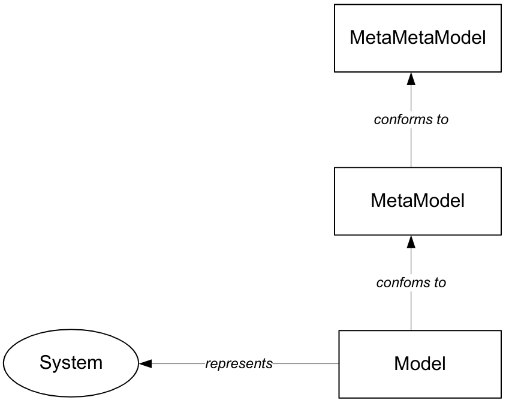
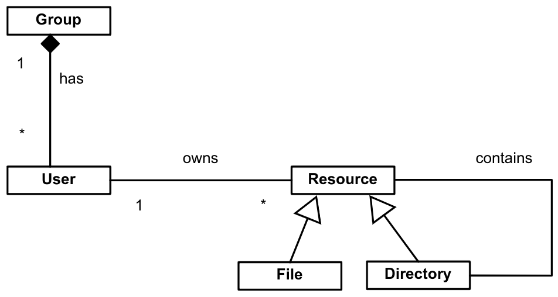
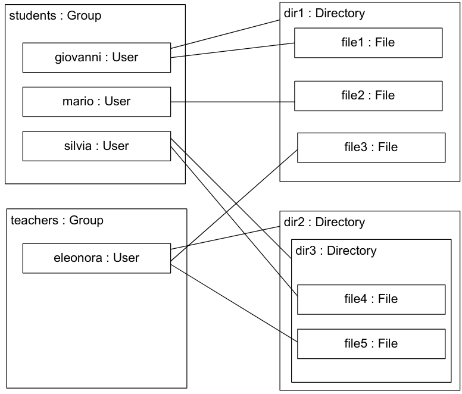
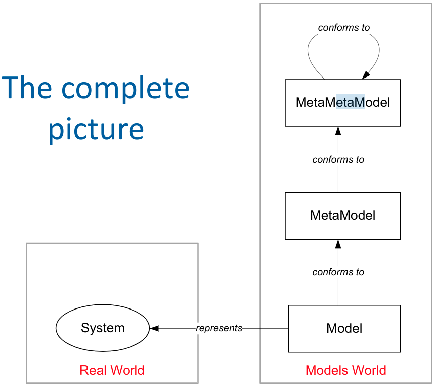
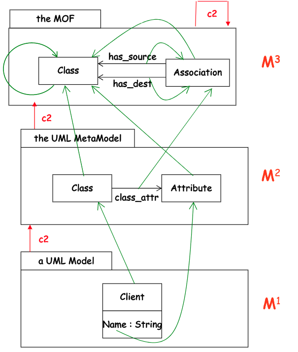
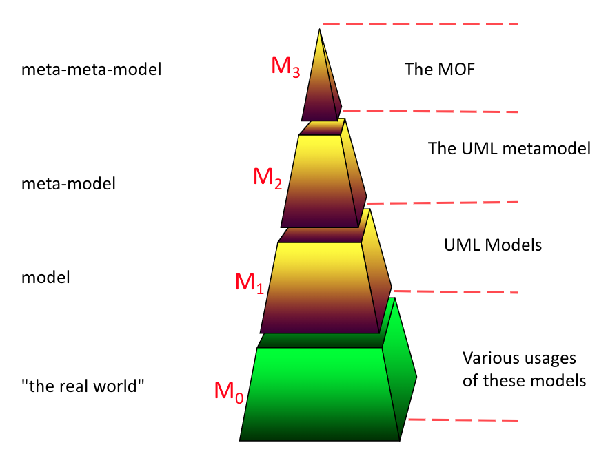
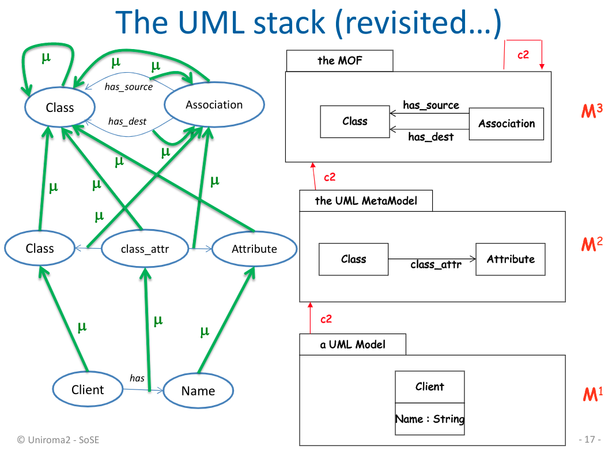
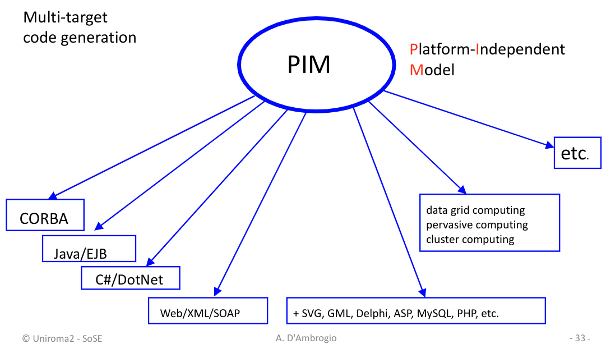

SOSE - Meta-MetaModeling
Indice
Meta-MetaModeling
Nella precedente lezione abbiamo visto che un modello è una rappresentazione astratta di un sistema.
Abbiamo anche visto che ogni modello è conforme ad un metamodello (o linguaggio) che ne definisce la struttura ed il significato.
Perciò un metamodello è utilizzato sia per definire un modello sia per verificarne la sua correttezza.
Per lo stesso ragionameto però anche un metamodello può essere definito basandosi su un meta-metamodello, ovvero un linguaggio usato per definire la struttura e il significato di un metamodello.

Allo stesso modo, anche un meta-metamodello può essere conforme a un meta-meta-metamodello, e così via…
Perciò è necessario cercare di capire come interrompere questa meta-\(\infty\) iterazione.
Per capire meglio come fare, consideriamo un esempio:
In un ambiente scolastico composto da docenti e studenti vogliamo definrie un sistema di gestione delle risorse informatiche. Si vogliono quindi rappresentare
docenti,studenti,risorseeprivilegiin base ai tipi di utenti.
Si potrebbe per esempio definire un metamodellare di questo sistema tramite una notazione visuale utilizzando un class diagram. Per esempio possiamo avere le seguenti classi e relazioni:
- Una classe
risorsala quale è una generalizzazione difileodirectory.- Una
risorsapuò avere una relazione riflessivacontains, in quanto unadirectorypuò contenere altre risorse.- Un
userche rappresenta gli utenti del sistema.- Una relazione
ownsdi proprietà che associa ad ogni utente più risorse.- Un'aggregazione
groupcomposta da utenti, che ne specifica i privilegi.
Grazie a questo metamodello possiamo ora instanziare un modello che descrive un sistema reale. Per esempio un sistema reale è formato da:
- Due gruppi:
- il gruppo studenti composto da Giovanni, Mario e Silvia.
- il gruppo docenti composto da Eleonora.
- Tre directory: dir1, dir2, dir3.
- Cinque file: file1, file2, file3, file4, file5.
- Le seguenti relazioni di possesso:
- Giovanni
ownsdir1, file1.- Mario
ownsfile2.- Silvia
ownsdir3, file4.- Eleonora
ownsdir2, file3, file5.- Le seguenti relazioni di contenimento:
- dir1
containsfile1, file2, file3.- dir2
containsdir3.- dir3
containsfile4, file5.
Figura 3: Modello che rappresenta il sistema appena descritto, e conforme al metamodella definito in precedenza.
Nell'esempio precedente abbiamo quindi rappresentato le caratteristiche rilevanti di un sistema reale tramite un modello, il quale è conforme a un metamodello.
Tale metamodello è rappresentato con una versione semplificata di un class diagram.
Perciò il class diagram è il meta-metamodello dell'esempio.
A questo punto possiamo chiederci: come rappresento il meta-metamodello?
È possibile dimostrare che il class diagram può essere descritto con un altro class diagram. Perciò abbiamo visto che possiamo definire un meta-metamodello conforme a se stesso.

MOF
Si può quindi intuire che tramite i diagrammi UML si può definire qualsiasi metamodello.
Lo standard MOF (Meta Object Facility) è un meta-metamodello utile per la definizione del metamodello UML.

Figura 5: The Object-Management-Group/Model-Driven-Architecture stack.
Nell'esempio in figura abbiamo un modello M1 che rappresenta un Cliente.
Tale modello è rappresentato visivamente con un class diagram UML, avente una classe Client con attributo name di tipo String.
A sua volta possiamo rappresentare il class diagram del modello M1 con un meta-metamodello M2, sempre tramite l'uso di un diagramma UML.
Possiamo definire due classi, la classe Class (che apputo indica una classe) e la classe Attribute (che invece rappresenta gli attributi di una classe del class diagramm).
A questo punto è necessario definire una relazione tra la classe Class e la classe Attribute che sta ad indicare l'appartenenza di un attributo ad una data classe.
In fine possiamo rappresentare questo metamodello UML M2 con un meta-metamodello MOF M3.
In sostanza non cambia molto, infatti si tratta nuovamente di una sorta di class diagram.
In questo caso abbiamo le sole classi Class e Association.
La prima classe Class di M3 cattura le classi Class e Attribute del metamodello M2.
La seconda classe Association di M3 invece rappresenta l'associazione tra Class e Attribute di M2.
Infice, tra le classi Class e Association di M3 ci sono due relazione che indicano la sorgente e la destinazione di una generica relazione.
Notare che M3 può essere definito tramite l'utilizzo di M3 stesso.

Some informal definitions of model
- Phil Bernstein, “A Vision for Management of Complex Systems”
- Un modello è una struttura complessa che rappresenta un artefatto software come per esempio uno schema relazionare, una definizione di interfaccia (
API), uno schemaXML, una rete semantica, un modelloUMLo un documento ipertestuale. - OMG, “UML Superstructure”
- Un modello cattura una visione di un sistema fisico. È un'astrazione del sistema fisico, con un certo scopo. Questo scopo determina cosa è incluso nel modello e cosa è rilevante. Pertanto il modello descrive completamente quegli aspetti del sistema fisico che sono rilevanti per lo scopo del modello, ad un livello di dettaglio appropriato.
- OMG, “MDA Guide”
- Un modello è una specifica formale della funzione, struttura e/o comportamento di un'applicazione o di un sistema.
- Steve Mellor, et al., “UML Distilled”
- Un modello è una semplificazione di qualcosa, che ci consente di visualizzarla, manipolarla e ragionarci su, e quindi ci aiuta a capire la complessità insita nell'argomento in studio.
- Anneke Kleppe, et. al. “MDA Explained”
- Un modello è una descrizione di un sistema (o di una sua parte) scritto in un linguaggio ben definito. Una linguaggio ben definito è una linguaggio con forma (sintassi) e significato (semantica) ben definiti, adatta per l'interpretazione automatizzata da parte di un computer.
- Chris Raistricket al., “Model Driven Architecture with Executable UML”
- Un modello è una rappresentazione formale della funzione, del comportamento e della struttura del sistema che stiamo considerando, espressa in un linguaggio rigoroso.
- J. Bézivin& O. Gerbé, “Towards a Precise Definition of the OMG/MDA Framework”
- Una semplificazione di un sistema costruito con un obiettivo prefissato in mente. Un modello dovrebbe essere in grado di rispondere alle domande al posto del sistema effettivo.
Formal (structural) definition of model
Purtroppo nessuna delle precedenti definizioni è completa, e inoltre nessuna di esse è realmente utile perl'ingegneria del software. Perciò abbiamo bisogono di una definizone più formale e utile ai nostri scopi.
DEF 1 (Directed Multi-Graph)
Un multi-grafo diretto \(G=(V_G, E_G, f_G)\) è composto da un insieme finito di nodi distinti \(V_G\), da un insieme finito di archi \(E_G\) e una funzione \[ f_G : E_G \rightarrow V_G \times V_G \]
DEF 2 (Model)
Un modello \(M = (G, \omega, \mu)\) è una tripla composta da:
- un multi-grafo diretto \(G=(V_G, E_G, f_G)\)
- un modello di riferimento \(\omega\), il quale è a sua volta un modello con multigrafo \(G_{\omega}=(V_{\omega}, E_{\omega}, f_{\omega})\)
- una funzione \[ \mu : V_G \cup E_G \rightarrow V_{\omega} \] che associa degli elementi di \(G\) a dei nodi o meta-elementi di \(G_{\omega}\).

DEF 3 (Meta-Metamodel)
Un meta-metamodello è un modello avente se stesso come modello di riferimento \(\omega\). Ovvero un modello che fa riferimento a se stesso.
DEF 4 (Metamodel)
Un metamodello è un modello avente un meta-metamodello come modello di riferimento \(\omega\).
DEF 5 (Terminal Model)
Un Terminal Model è un modello avente un metamodello come modello di riferimento \(\omega\).
Principi del Model Driven Architecture
Uno dei principi fondamenti del MDA è descritto dal motto
Model Once, Generate Anywhere1
L'idea dietro questa frase consiste nel fatto che una volta definito un modello che rappresenta un determinato sistema rispetto a un dato problema da risolvere, da esso si può generare in maniera automatica il software (o una sua parte), indipendentemente da quale tecnologia si desidera utilizzare. In questa maniera si ottiene un netto guadagno in termini di sviluppo del software.

[DA FINIRE…]
Note a piè di pagina:
simile al motto di java Write Once, Run Anywhere.